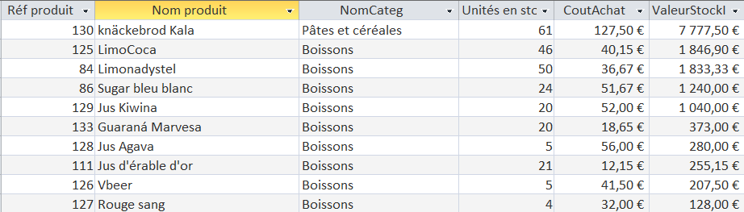
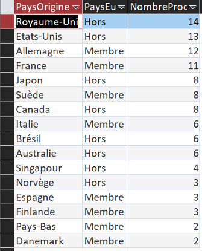
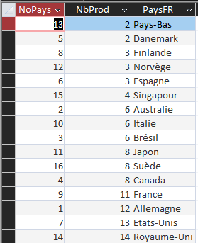

Le nombre de produits dans des commande dont les fournisseurs viennent et ne viennent pas du même pays que le client.
L’entreprise KDou a pour objectif de se donner une image plus eco-friendly. Pour cela, elle peut essayer de minimiser le changement de pays de produits. Privilégier les produits locaux réduirait son empreinte carbone ainsi que ses frais de livraison. Pour constater le problème, il faut créer deux requêtes pour compter les produits qui changent de pays et les autres.
| Même pays |
|---|
|
| 2482 |
| Pays différent |
|
222 |
On constate que pour la grande majorité des produits commandés, les clients ne viennent pas du même pays que le fournisseur. De gros progrès sont donc possible pour KDou sur ce sujet.
Les produits qui sont encore en stock, classés selon la valeur financière qu'ils représentent pour l'entreprise.
Cette requête identifie les produits qui n'ont jamais été vendus (plus précisément, jamais commandés), qui sont encore en stock. C'est notamment utile pour repérer les stocks dormants et les produits qui immobilisent inutilement beaucoup de capital.
SELECT
Produit.RefProd,
Produit.NomProd,
Categorie.NomCateg,
Produit.UnitStock AS UnitesEnStock,
Produit.CoutAchat,
(Produit.UnitStock * Produit.CoutAchat) AS ValeurStockImmobilise
FROM
(Produit INNER JOIN Categorie ON Produit.CodeCateg = Categorie.CodeCateg)
LEFT JOIN DetailCommande ON Produit.RefProd = DetailCommande.[Réf produit]
WHERE
DetailCommande.[Réf produit] IS NULL
AND Produit.UnitStock > 0
ORDER BY
(Produit.UnitStock * Produit.CoutAchat) DESC;

Les pays et leur appartenance à l'UE des fournisseurs classés par plus grand nombre de produits fournis.
Cela permet d’identifier l’origine géographique des produits et donc de permettre d’établir une politique de fournissement plus respectueuse de l’environnement en privilégiant des fournisseurs plus proches. En outre, cela permettra à Kdou de garder l’œil sur sa dépendance aux fournisseurs étrangers et de renforcer sa position sur le marché européen.
SELECT Pays.PaysFR AS PaysOrigine, Pays.UE AS PaysEuropeen,
Count(Produit.RefProd) AS NombreProduits
FROM (Pays INNER JOIN Fournisseur ON Pays.NoPays = Fournisseur.NoPays)
INNER JOIN Produit ON Fournisseur.NoFour = Produit.NoFour
GROUP BY Pays.PaysFR, Pays.UE
ORDER BY Count(Produit.RefProd) DESC;

Le nombre de fournisseurs dans chaque pays, classés par ordre croissant
Cette requête a pour but d'optimiser les trajets afin de réduire leurs coûts et leurs émissions de CO2. Par exemple, elle permettrait de voir si plusieurs produits pourraient être ramenés en un seul trajet plutôt que lors de plusieurs trajets plus courts. Ainsi, KDou pourrait également rechercher d'autres fournisseurs dans des pays où l'entreprise possède déjà des fournisseurs afin de limiter le nombre de trajets.
SELECT
P.NoPays,
Count(Prod.RefProd) AS NbProd,
P.PaysFR
FROM
Pays AS P
INNER JOIN (
Fournisseur AS F
INNER JOIN Produit AS Prod ON F.NoFour = Prod.NoFour
) ON P.NoPays = F.NoPays
GROUP BY
P.NoPays,
P.PaysFR
ORDER BY
Count(Prod.RefProd);
